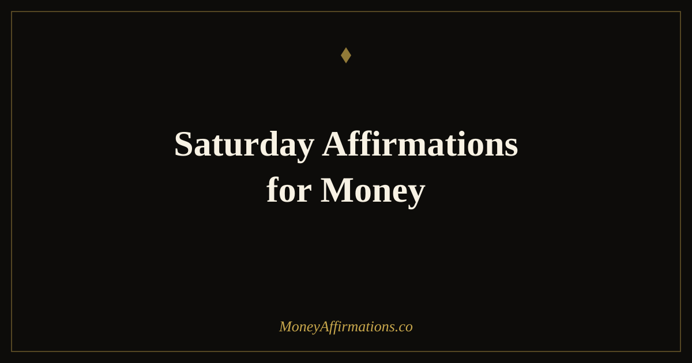

Saturday Affirmations for Money: 25 Statements to Thrive

Saturday carries a particular financial risk that most people do not notice: decisions made when you are tired, relieved to have the week over, and surrounded by opportunities to spend. A full week of decisions, social demands, and financial pressures depletes the mental resources that normally support self-regulation — and that depletion tends to peak exactly when the weekend begins. The result is spending that felt fine in the moment but looks different by Monday.
Saturday affirmations for money are not about restricting enjoyment. They are about arriving at the weekend still connected to who you are financially — still the person who has goals, who values progress, and who chooses from intention rather than exhaustion. These 25 statements take two minutes in the morning and change the quality of every financial decision that follows. Use them before you check your phone, before you plan the day, and watch how differently the weekend unfolds.
What are Saturday affirmations for money?
Saturday affirmations for money are present-tense statements designed for the start of the weekend — a moment when financial identity is particularly susceptible to drift. They work by reconnecting you with your financial values before the day's spending opportunities arrive. Unlike weekday affirmations focused on earning and action, Saturday affirmations balance rest and abundance: you are affirming that you deserve enjoyment and that your financial goals remain intact simultaneously.
They also serve as a weekly review anchor. Saturday morning is an ideal time to briefly acknowledge the week's financial wins, release what did not go to plan, and set a clean intention before Sunday's preparation for the week ahead. This creates a rhythm in which money is neither avoided on weekends nor obsessed over — it is simply held lightly, with the confidence of someone who has a relationship with it that does not require constant management.
25 Saturday affirmations for money
- I begin this Saturday grounded in my financial values and open to enjoyment.
- I have earned the right to rest, and rest makes me more financially effective.
- My financial goals are still moving forward, even when I am not actively working.
- I choose how I spend money today from a place of intention, not impulse.
- I celebrate this week's financial wins, however small, with genuine appreciation.
- I am allowed to enjoy my money while continuing to grow it.
- This weekend I rest, recharge, and return to my goals with greater clarity.
- I spend consciously today, knowing every choice reflects my growing financial wisdom.
- My relationship with money is healthy enough to include real enjoyment.
- I close this week as someone who has made progress toward the life I am building.
- Saturday is a day of abundance — in time, in rest, and in chosen experience.
- I am grateful for every pound and dollar that moved through my life this week.
- I release any financial stress from the week and return to a state of clarity.
- I make Saturday purchases from values, not from exhaustion or reward-seeking.
- My financial security is not undone by enjoying today — it is part of a balanced life.
- I am proud of the financial choices I made this week and I build on them next week.
- This Saturday I invest in experiences that genuinely restore and nourish me.
- I arrive at Monday rested, clear, and ready to earn and build with renewed focus.
- My money supports my life — including the parts that require rest and pleasure.
- I am a person who enjoys prosperity today and protects it for tomorrow.
- This weekend I allow myself to receive the fullness of a well-lived, well-funded life.
- I review my week's finances with curiosity and care, not judgment or fear.
- Saturday is evidence that I have enough — enough time, enough money, enough.
- I carry my financial confidence into the weekend and into everything I choose today.
- This day is mine: abundant, free, and building toward everything I am working for.
How to use these affirmations
Use Saturday affirmations before any planned spending or social activity. If you know the day involves shopping, eating out, or experiences that cost money, a brief affirmation practice in the morning — before you leave the house — changes the baseline from which those decisions are made. Choose three statements that feel relevant to your current financial moment: one about rest and deserving enjoyment, one about conscious spending, and one that acknowledges this week's progress. Say them aloud, slowly, with the intention of arriving at the day as your most capable financial self.
Pair the practice with a Saturday financial ritual: a ten-minute review of the week. What did you spend? What did you earn? What went well and what would you do differently? This review, done with your affirmations as an anchor rather than from a place of anxiety, becomes a powerful weekly habit. People who do brief weekly money reviews consistently outperform monthly reviewers in budget adherence and savings rates. Saturday morning is the ideal moment — the week is complete, the next week has not started, and you have the mental space to look honestly and kindly at your financial picture. Pair this with Friday affirmations for money for a full end-of-week practice.
Why weekends are the biggest test of financial identity
Psychologists Roy Baumeister and colleagues established the concept of ego depletion — the finding that self-regulatory capacity is a finite resource that diminishes with use. After a week of decisions, work pressure, and social navigation, the mental muscle used for financial self-control is genuinely fatigued. Saturday arrives at the moment of peak depletion, surrounded by marketing messages, social spending norms, and the genuine human need for reward and release.
This is not a character weakness — it is biology. But it does explain why so many people make their most misaligned financial decisions on Saturday and Sunday. Affirmations function as a light recalibration of financial identity at exactly this vulnerable moment. They do not eliminate the desire to spend; they reintroduce the context — who you are, what you value, what you are working toward — that makes spending decisions conscious rather than reactive. A person who has affirmed "I choose how I spend money today from a place of intention, not impulse" is simply more likely to pause before the checkout, not because they are more disciplined, but because the pause has been primed.
Tips to make them work faster
- Use them before you leave the house. Saturday spending decisions are harder to influence once you are already in the environment. Affirmations work best as preparation, not recovery.
- Pair with a ten-minute weekly money review. Acknowledge one win from the week. This is the practice that builds week-on-week financial confidence.
- Choose the spending affirmation that fits your current pattern. If emotional spending is your pattern, choose "I make purchases from values, not exhaustion." If guilt about enjoying money is the issue, choose "I am allowed to enjoy money while growing it."
- Set one financial intention for next week. Saturday is an ideal day to name one money move you will make in the coming week. Written intentions on weekends are acted on at higher rates than those set Monday morning.
- End Saturday with gratitude, not review. The evening affirmation is simply: what one financial thing am I genuinely glad about today? End there. The week is closed.
Frequently Asked Questions
Why use money affirmations on a Saturday when the working week is over?
Saturday is one of the highest-risk days for financial decisions made from emotion rather than intention. Research on ego depletion shows that decision-making quality drops after a demanding week, making impulsive spending more likely. Using affirmations on Saturday grounds your relationship with money before you encounter the weekend's spending triggers. They are not about restricting enjoyment but about ensuring Saturday choices are made from your values, not from exhaustion.
Should Saturday affirmations focus on rest or on financial goals?
Both — and the connection between them is important. Rest is not the opposite of financial progress; it is part of it. A mind restored on Saturday makes better decisions on Monday. Saturday affirmations that affirm your right to rest and enjoyment while maintaining your financial identity are more effective than ones that treat the weekend as time away from your goals. The aim is to close the week as someone who is thriving, not simply recovering.
What is the best Saturday financial habit to pair with affirmations?
A brief weekly review — ten to fifteen minutes. Check what you spent this week against your plan, note one thing you did well financially, and set one clear intention for next week. Done with affirmations rather than anxiety, this review becomes a ritual of agency rather than judgement. People who review their finances weekly make measurably better financial decisions than those who review monthly or not at all.
For a full set of money statements to carry through every day of your financial week, explore the money affirmations collection and build the kind of consistent practice that makes prosperity a way of life, not just a weekend intention.